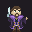
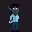
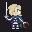
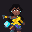
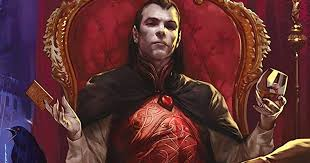

Party Members
Current Party Members
Rodgier

Brody Codius

Ireena Kolyana
Former Party Members
Muure Holdless, fell to zombie plague spreader
Gordon Ramsay, fell to bloodlusted werewolf
Seras Victoria, fell to Rodgier's blade
Bashnaag the Guilty, alive and pissed off
BaubleBranch, gave her life to give Brody a second chance
Party Members
Party Members
Daelin Aeval, The Harpy Harp of the High Harbor

Nilah

The Darklord of the Valley

Genius Billionaire Playboy Philantropist
Under raging storm clouds, a lone figure stands silhouetted against the ancient walls of Castle Ravenloft. The vampire Count Strahd von Zarovich stares down a sheer cliff at the village below. A cold, bitter wind spins dead leaves about him, billowing his cape in the darkness.
Lightning splits the clouds overhead, casting stark white light across him. Strahd turns to the sky, revealing the angular muscles of his face and hands. He has a look of power—and of madness. His once handsome face is contorted by a tragedy darker than the night itself.
Rumbling thunder pounds the castle spires. The wind’s howling increases as Strahd turns his gaze back to the village. Far below, yet not beyond his ken, a party of adventurers has just entered his domain. Strahd’s face forms a twisted smile as his dark plan unfolds. He knew they were coming, and he knows why they have come—all according to his plan. He, the master of Ravenloft, will attend to them.
Another lightning flash rips through the darkness, its thunder echoing through the castle’s towers. But Strahd is gone. Only the howling of the wind—or perhaps a lone wolf—fills the midnight air. The master of Ravenloft is having guests for dinner. And you are invited